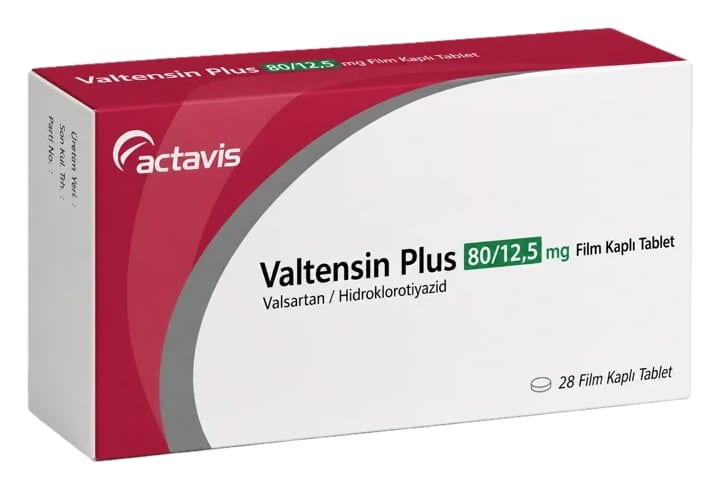

Valtensin Plus 80/12.5 mg Film Kaplı Tablet, Tablet, 28 Adet

Ne için kullanılır
KT · Bölüm 1: Her bir film tablet, 80 mg valsartan ve 12,5 mg hidroklorotiyazid içerir. VALTENSİN PLUS, 28 adet film kaplı tablet içeren blister ambalajlarda takdim edilmektedir. 4 ; : VALTENSİN PLUS, yüksek kan basıncının kontrol edilmesine yardımcı olan anjiyotensin-II antagonisti ve idrar söktürücü (diüretik) içerir. Vücutta bulunan doğal bir madde olan | anjiyotensin 11 kan damarlarının daralmasına ve böylece kan basıncının yükselmesine neden olur. ! VALTENSİN PLUS içindeki valsartan anjiyotensin II'nin etkisini önler. Sonuç Olarak, kan ! damarları genişler ve kan basıncı düşürülür. Diüretikler, idrar atılımını artırarak vüc aki tuz ve ! su miktarını düşürür. Bu, uzun süreli kullanımda kan basıncını düşürmeye ve kontrol altına | almaya yardımcı olur. : ; 1/10 : j
i i
: | | | | VALTENSİN PLUS, yüksek kan basıncının düşürülmesinde kullanılır. Yüksek kan basıncı i kalbin ve atardamarların iş yükünü artırır. Bu durum uzun süre devam ederse, beyin, kalp ve | böbrek damarlarını hasara uğratabilir ve inme, kalp yetmezliği ya da böbrek yetmezliği ile Fi sonuçlanabilir. Yüksek kan basıncı kalp krizi riskini artırır. Kan basıncınızı normal değerlere i düşürmek bu hastalıkların gelişme riskini azaltır. : : VALTENSİN PLUS'ın nasıl çalıştığı veya bu ilacın size neden reçete edildiği ile ilgili sorularınız | var ise, doktorunuza sorunuz. | ;